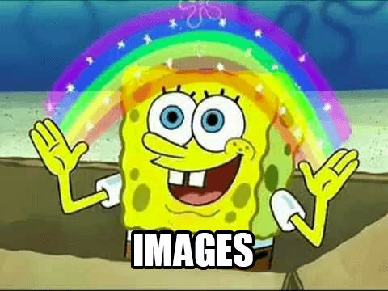

Vous avez un produit, un portfolio, ou juste une idée que vous voulez partager avec tout le monde sur votre propre website. Avant de le mettre en ligne sur internet, vous voulez soigner son apparence, le rendre professionnel, ou au moins décent à regarder.
Quelle est la première chose que vous avez besoin de travailler?
Le contenu
Le but du design est d'améliorer la présentation du contenu sur lequel il intervient. Cela peut sembler évident, mais le contenu étant l'élément principal d'un site web, il ne doit pas être considéré comme un élément superflu.
Le contenu écrit, comme le paragraphe que vous êtes en train de lire, représente plus de 90 % du Web. Le style de ce contenu textuel contribuera grandement à son succès.
Supposons que vous ayez déjà finalisé le contenu que vous souhaitez publier et que vous venez de créer un fichier style.css vide, quelle est la première règle que vous pouvez écrire ?
Le centrage
Les longues lignes de texte peuvent être difficiles à analyser, et donc à lire. Fixer une limite de caractères par ligne améliore considérablement la lisibilité et l'attrait d'un mur de texte.
body {
margin: 0 auto;
max-width: 50em;
}
Après avoir donné un style au conteneur de texte, qu'en est-il du style du texte lui-même ?
Font family
La police par défaut du navigateur est "Times", qui peut être peu attrayante (surtout parce que c'est la police "non stylisée"). Le passage à une police sans-sérif comme "Helvetica" ou "Arial" peut améliorer considérablement l'aspect de votre page.
body {
font-family: "Helvetica", "Arial", sans-serif;
}
Si vous voulez vous en tenir à une police serif, essayez "Georgia".
Si cela rend le texte plus attrayant, rendons-le également plus lisible.
L'Espacement
Lorsqu'une page semble "cassée" pour un utilisateur, il s'agit généralement d'un problème d'espacement. En laissant de l'espace autour et à l'intérieur de votre contenu, vous augmentez l'attrait de votre page.
body {
line-height: 1.5;
padding: 4em 1em;
}
h2 {
margin-top: 1em;
padding-top: 1em;
}
Bien que la mise en page se soit considérablement améliorée jusqu'à présent, appliquons des changements plus subtils.
La couleur & le contraste
Un texte noir sur un fond blanc peut être éprouvant pour les yeux. En optant pour une nuance de noir plus douce pour le corps du texte, la page est plus agréable à lire.
body {
color: #3B3B3B;
background-color: #abe80136;
}
Et afin de conserver un niveau de contraste acceptable, choisissons une teinte plus foncée pour les mots importants.
h1,
h2,
strong {
color: #333;
}
Si la majeure partie de la page a été améliorée visuellement, certains éléments (comme les extraits de code) semblent encore mal placés.
L'équilibre
Il suffit de quelques touches supplémentaires pour corriger l'équilibre de la page :
code,
pre {
background: #eee;
}
code {
padding: 2px 4px;
vertical-align: text-bottom;
}
pre {
padding: 1em;
}
À ce stade, vous pourriez vouloir faire valoir votre page et lui donner une identité.
Primary color
La plupart des marques ont une couleur primaire qui sert d'accent visuel. Sur un site Web, cet accent peut être utilisé pour mettre en valeur des éléments interactifs, tels que des liens.
a {
color: #496202;
}
Mais pour maintenir l'équilibre, nous aurons besoin de quelques couleurs supplémentaires.
Les couleurs secondaires
La couleur d'accent peut être complétée par des nuances plus subtiles, à utiliser sur les bordures, les fonds ou même le corps du texte..
body {
color: #566b78;
}
code,
pre {
background: #333;
border-bottom: 1px solid #d8dee9;
color: #fff;
}
pre {
border-left: 2px solid #69c;
}
Après avoir changé les teintes, pourquoi ne pas changer les formes...
Une police personnalisée
Le texte étant le principal contenu d'une page web, l'utilisation d'une police personnalisée donne à la page une identité encore plus perceptible.
Bien que vous puissiez intégrer votre propre police ou utiliser un service en ligne comme Typekit, utilisons "Roboto" de la bibliothèque gratuite Google Fonts
.
@import 'https://fonts.googleapis.com/css?family=Roboto:300,400,500';
body {
font-family: "Roboto", "Helvetica", "Arial", sans-serif;
}
Après avoir valorisé votre identité par le texte, que diriez-vous d'ajouter mille mots...

Les graphiques et les icônes peuvent être utilisés soit comme des ornements pour soutenir votre contenu, soit participer activement au message que vous souhaitez transmettre.
Améliorons notre en-tête avec une belle image d'arrière-plan provenant de Unsplash.
header {
background-color: #263d36;
background-image: url("header.jpg");
background-position: center top;
background-repeat: no-repeat;
background-size: cover;
line-height: 1.2;
padding: 10vw 2em;
text-align: center;
}
Ajoutons aussi un logo
header img {
display: inline-block;
height: 120px;
vertical-align: top;
width: 120px;
}
Profitons de cette occasion pour améliorer les styles du texte.
header h1 {
color: white;
font-size: 2.5em;
font-weight: 300;
}
header a {
border: 1px solid #e81c4f;
border-radius: 290486px;
color: white;
font-size: 0.6em;
letter-spacing: 0.2em;
padding: 1em 2em;
text-transform: uppercase;
text-decoration: none;
transition: none 200ms ease-out;
transition-property: color, background;
}
header a:hover {
background: #e81c4f;
color: white;
}
Et voilà!
Nous avons conçu une page de qualité en quelques minutes seulement, en respectant les principes de base de la conception de sites web.. Il y a juste une dernière chose à faire...